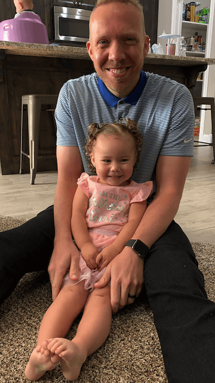

About Me
I'm a Front-End Developer with five years of experience and a love for building intuitive and creative user experiences. My can-do mentality and easy-going attitude create enjoyable working relationships and drive me for new and challenging opportunities.
I'm a family guy with a beautiful wife who always pushes me to be the best I can be and two cute kids who are little firecrackers that always keep life exciting.
My hobbies include DIY projects, golfing, traveling, TV series, and outdoor activities.



Experience
Full-Stack Engineer
- After getting married and expecting our first child my wife and I decided we wanted to be closer to our family. This led us to find Kyäni.
- With a smaller team, I've gained exposure to various technologies and applications. I started working with an AngularJS BackOffice application used by business partners to track their business and earnings. With BackOffice I created enhancements for earnings reports and achievements. I also created a message center used to notify business partners of advancements, orders, promotions, and events happening within Kyäni.
- Starting mid-2020, I became involved with the e-commerce team working with enrollments of new business partners. This application uses a combination of PHP, Laravel, and Vue.js and has features that meet the specific needs of different markets globally. Beginning in 2021, I became the code owner of the enrollment application and have since developed various enhancements with third-party integration tools like EasyPost and Nexio payment technology.
- Currently, I am working on migrating the existing Kyäni shopping cart to the SAP e-commerce solution using the Spartacus storefront.
Front-end Developer
- When I started my career at GM, I had the choice to work with front-end or back-end technologies. I chose the front-end route because I love getting to see the visual changes and effects of the work that I am doing.
- The first project I worked on was creating a scheduling application for plastic parts created in Brazil and Korea manufacturing plants. This application was developed using AngularJS and had many complicated calendar functionalities that were challenging and stretched my understanding of AngularJS and Javascript.
- The next project I worked on was taking an old legacy label creation application and redoing it in the most up-to-date Angular. I worked hard to create reliable and reusable components and significantly improve the user experience for this application.
- While working closely with designers for the label project, I started helping them create an Angular design library of reusable components that other developers could consume into their manufacturing projects.
Project Management Intern
- This internship was my first experience working with a team in an agile development setting. I learned the basics of creating epics, stories and working with the team in daily scrum meetings to get updates for our planned releases each sprint.
- I was in charge of conducting daily scrum meetings and updating task details assigned to team members.
- This experience has been beneficial for me in my career because agile development is something I have used daily since.